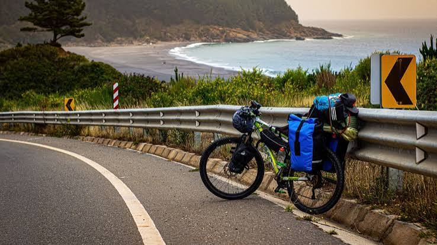

Aqui encuentras cada tarifa de cada uno de nuestros servivios
| Tipo de bicicleta | 1 Hora | Medio dia (4h) | Dia completo |
|---|---|---|---|
| Urbana | $ 10.000 | $ 30.000 | $ 50.000 |
| Montaña | $ 15.000 | $ 45.000 | $ 70.000 |
| Electrica | $ 25.000 | $ 70.000 | $ 110.000 |
| Recorrido | Distancia | Duracion | Nivel | Precio por persona |
|---|---|---|---|---|
| Rio y Parques | 12 km | 2h | Facil | $ 45.000 |
| Sabores de Barrio | 18 km | 3h | Medio | $ 60.000 |
| Reto Las Palmas | 25 km | 4h | Dificil | $ 85.000 |
Recuerda: Cada bicicleta incluye el caso y su candado
Las salidas son cada dos horas empezando desde las 8 am hasta las 2 pm